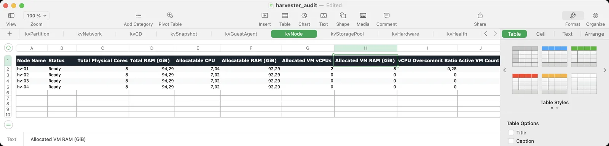
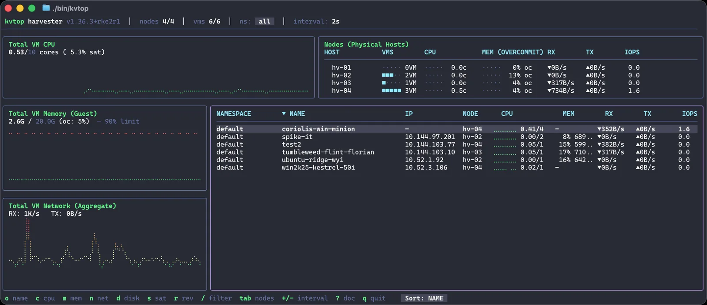
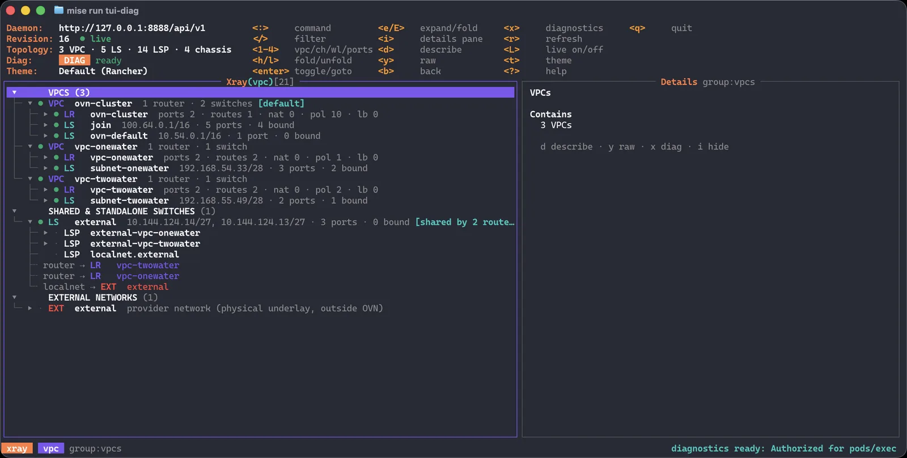

Harvester · SUSE Virtualization · OpenShift Virtualization · KubeVirt
Day-2 tools for people who run VMs on Kubernetes.
A week after a VMware exit, someone asks for the RVTools export. On KubeVirt there isn't one, and there's no esxtop or vSphere network view either. I wrote three read-only command-line tools to cover those gaps: inventory, live load per VM, and the OVN network map.
KVTools
Inventory and health audit · coulof/kvtools · MIT
If you have ever sized a migration from an RVTools export, you know the format. KVTools produces the same kind of workbook for a KubeVirt cluster: one tab per concern, one row per VM, disk or NIC. The tabs are named after their RVTools counterparts, so vInfo becomes kvInfo.
It also runs a health audit. The rules are the things that hurt during a VMware exit: an RWO volume on a VM that should live-migrate, a HostDisk pinning a VM to one node, a guest agent that never connected, snapshots nobody cleaned up.
$ brew install coulof/tap/kvtools # whole cluster to Excel $ kvtools # just the audit, in the terminal $ kvtools health # merge exports from several clusters $ kvtools merge c1.xlsx c2.xlsx -o all.xlsx
13 sheets
- kvInfo
- kvCPU
- kvMemory
- kvDisk
- kvPartition
- kvNetwork
- kvCD
- kvSnapshot
- kvGuestAgent
- kvNode
- kvStoragePool
- kvHardware
- kvHealth
A few of the health rules
- HLTH-001 live migration configured on an RWO PVC
- HLTH-005 zombie PVC whose owner VM no longer exists
- HLTH-008 VM snapshots older than 14 days
- HLTH-011 node vCPU overcommit above 8:1

kvNode sheet: physical cores, allocatable resources, allocated vCPU and RAM, and the overcommit ratio per host.KVTop
Live VM monitor and MCP server · coulof/kvtop · v0.2.0 · MIT

Harvester ships with monitoring turned off, so a busy host often has no dashboard to check. KVTop scrapes virt-handler on every node through the API server proxy, using only your kubeconfig. Nothing gets installed in the cluster.
Select a VM and it streams virsh domstats: per-vCPU wait time, per-NIC throughput, per-disk IOPS. Live migrations show up as they happen.
The same core outputs JSON (kvtop top, vm, nodes, diagnose) and runs as an MCP server, so you can ask your coding agent which VM is the noisy neighbour.
$ brew install coulof/tap/kvtop $ kvtop $ kvtop --sort mem --namespace prod # OpenShift / upstream $ kvtop --virt-handler-namespace openshift-cnv # for agents $ kvtop diagnose -o json -q $ claude mcp add kvtop -- kvtop mcp
KVOvn-topo
OVN topology explorer · coulof/kvovn-topo · v0.1.0 pre-release
kubectl ko nbctl show gives you every row and no picture. KVOvn-topo reads the Northbound and Southbound databases, joins them, and shows the result as a k9s-style tree: VPC, router, switch, port, and the pod or VM behind it. Press Enter on a relation to follow it.
With --diag it runs ovn-trace, tcpdump or conntrack for the selected object, on the node that hosts it. Without it, nothing is executed anywhere.
It supports Kube-OVN on RKE2 and Harvester. On OpenShift it reads ovn-kubernetes one node at a time. If you want the long version, read Following a Packet Through OVN.
- Read-only, enforced by a lint in CI
- No exposed endpoint: reached through the API server service proxy
- Push updates: OVSDB monitors in, SSE out
- Air-gap: static binaries, distroless image, Hauler manifest
$ helm install kvovn-topo \ oci://ghcr.io/coulof/charts/kvovn-topo \ -n kube-system $ brew install coulof/tap/kvovn-topo $ kvovn-topo

What they have in common
None of them change your cluster. KVOvn-topo's exec-based diagnostics are opt-in behind a flag.
KVTools and KVTop install nothing in the cluster. KVOvn-topo runs one small daemon.
From a clone of the repo, kvtop --replay testdata/ and kvovn-topo --fixture run on recorded data.
Static binaries, no call-home. Built for networks where nothing reaches the internet.
KVTop and KVOvn-topo ship MCP servers and stable JSON output.
Tested mostly on Harvester, so bug reports from OpenShift Virtualization help the most.